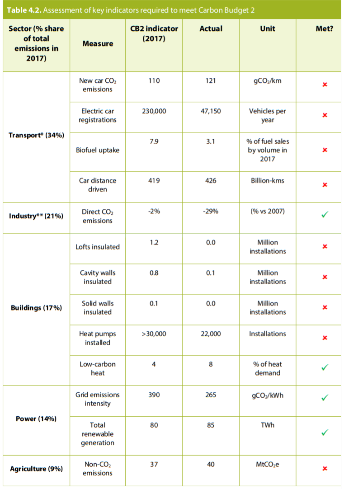

Meeting the Carbon Budget
Overall our policy indicators for 2017, the last year of the second carbon budget, suggest there
was limited progress in most areas outside of the EU ETS (Table 4.2):
- Transport. None of our high-level indicators were met. New car emissions, registrations of
electric vehicles, uptake of biofuels, and distances travelled were all behind schedule.
- Industry. Our overarching indicator for the sector (i.e. direct combustion CO2 emissions) has
been met. This largely reflects growth in the manufacturing sector being significantly lower
than expected in 2008 when the budget was set (see Section 1.3), as well as other factors
such as plant closures, improvements in energy intensity and changes in the fuel mix.
- Buildings. Most of our high-level indicators have not been met. Insulation rates fell very
significantly after installation programmes (i.e. Carbon Emissions Reduction Target, CERT and
Community Energy Saving Programme, CESP) ended in 2012, with the replacement
obligation (ECO) less ambitious than its predecessors and the Green Deal failing to deliver.
Whilst low-carbon heating appears to exceed the indicator, much of this is either bioenergy
in the form of domestic biomass (which is not the long-term best use of finite bioenergy
resources) or reversible air-to-air heat pumps in commercial buildings (generally installed for
cooling). Residential heat pump sales remained below the levels needed.
- Power. Both our indicators for grid emissions intensity and total renewable generation have
been met, reflecting the progress made in decarbonising electricity generation.
- Agriculture, land use and forestry. None of our indicators were met, reflecting the lack of
firm government policy in this area.
- Waste. Good progress was made reducing waste emissions.
- F-gases. Our F-gas emissions indicator was not met. The main policy instrument, the EU Fgas Regulation, only came into effect in 2015.
Overall, we conclude that UK policies did not deliver ahead of schedule in the second carbon
budget period. Progress was mostly confined to sectors covered by the EU ETS. In particular,
policies have contributed significantly to reducing emissions in the power sector.

Overall, we conclude that UK policies did not deliver ahead of schedule in the second carbon
budget period. Progress was mostly confined to sectors covered by the EU ETS. In particular,
policies have contributed significantly to reducing emissions in the power sector.
UK power sector policies have contributed to reducing the cost of renewable energy: